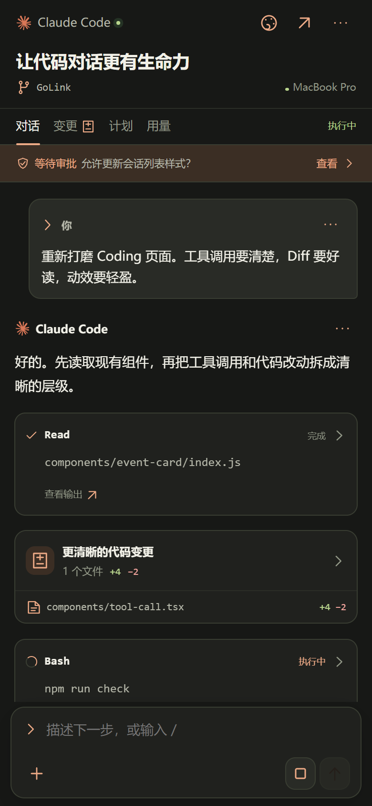

01 / APPROVALS
关键一步，由你拍板。
工具执行前需要确认？在手机端处理请求。
授权范围与选项，以实际 Agent 能力为准。
等待你的决定本地交互演示
允许更新会话列表样式？演示请求 · 不会执行任何远程操作
YOUR AGENTS. WITHIN REACH.
让 Agent 继续工作，让你自由离开。
在手机上查看进度、回复问题、处理审批，
连接运行在自有开发机与 VPS 上的编程智能体。
01 THE WORKSPACE
LESS WATCHING. MORE DOINM.不是把 IDE 缩小到手机。
而是把真正需要你的时刻，
带到你手边。
设备是否在线，任务跑到哪里，还有什么需要你决定。一个工作台，把分散的进展重新聚拢。
基于当前 WXML / WXSS 离线渲染，使用虚构演示数据。非微信真机截图。
02 DESIGNED FOR MOMENTUM
STAY IN THE LOOP, NOT AT THE DESK.从一句指令，到一次确认。
给远程工作流一个有序的入口。
工具执行前需要确认？在手机端处理请求。
授权范围与选项，以实际 Agent 能力为准。
消息、工具、计划与用量，
汇入同一条清晰的时间线。
连接自己的开发机与 VPS。
配对、设备状态与撤销，都有入口。
在支持的适配器中查看文件差异。
目前 Codex 已提供文件变更事件。
事件序号、缺口检测与重连补齐。
恢复的是事件，不是重新执行任务。
模型目录、下一轮模型选择、取消。
只展示对应设备实际开放的能力。
命令面板按能力开放，不直接执行任意 CLI 字符串。
03 MAKE IT YOURS
SAME WORKSPACE. YOUR PALETTE.从纸白到墨黑，六种完整配色。消息、代码差异、状态与操作控件一起切换，不只是换一个背景。
余烬 · Ember

SOURCE UI · THEME PREVIEW04 SHARE WITH INTENT
A SESSION, NOT YOUR MACHINE.把需要一起看的进展分享给伙伴。只读查看，或在明确授权后协作；有效期和撤销入口，都留在你的掌控中。
页面展示为隔离示例数据，不创建真实分享。
05 THE CONTROL PLANE
SIMPLE CONNECTIONS. CLEAR BOUNDARIES.Agent 继续运行在你的设备。
喵连 负责把指令送达，把进展带回。
微信小程序
REST + WSS调度、事件、鉴权
weagent/1开发机 / VPS
LOCAL ADAPTERS保留原生工作方式
CODEX · CLAUDE · PI06 PRIVATE BY DESIGN
远程控制，不意味着交出本机认证。Node 使用 Agent 原有的本机认证，网关不保管 Agent API Key，也不代为执行 Shell。
07 GOOD TO KNOW
关于连接、能力与隐私。
Agent 在你的设备运行，网关不直接读取你的主机目录，也不保管 Agent 认证文件。但消息、工具输出、Diff 与文件片段可能通过网关传输或持久化。因此不能把“不上传整个仓库”理解为“任何代码内容都不会经过网关”。
随附 Node 工程已实现 Codex App Server、Pi RPC 与显式扩展、Claude Code 官方 Agent SDK 的适配。功能按设备返回的能力开放，并非三个 Agent 的所有能力完全一致。DeepSeek Harness、OpenCode 与 Generic PTY 属于原页面的扩展规划，不在当前原生适配范围内。
不是。本页是独立产品介绍页，3D 场景、切换页面和审批按钮均为本地演示，不连接 Gateway、不执行远程代码。真实控制入口在随附微信小程序工程中。正式小程序访问链接和发布二维码尚未提供，本页不会生成虚假入口。
连接中断时，通过事件序号和持久队列恢复未确认事件，而不是重复执行任务。但 Node Daemon 进程重启不会恢复原生执行：旧会话将关闭为只读，不确定的操作保留原状态，不能把网络重连与进程恢复混为一谈。
需要随附完整工程中的 Go Gateway、已安装并完成本机登录的 Agent，以及微信开发者工具。按各工程 README 配置并启动 Gateway 与 Node，再在小程序完成设备配对。当前项目验证不等于生产环境、真实微信登录及所有真实 Agent 场景已验收。
YOUR NEXT MOVE, FROM ANYWHERE.
去走走，去生活。需要你决定的时候，再回来。
自有设备 · 原生适配 · 清楚的能力边界